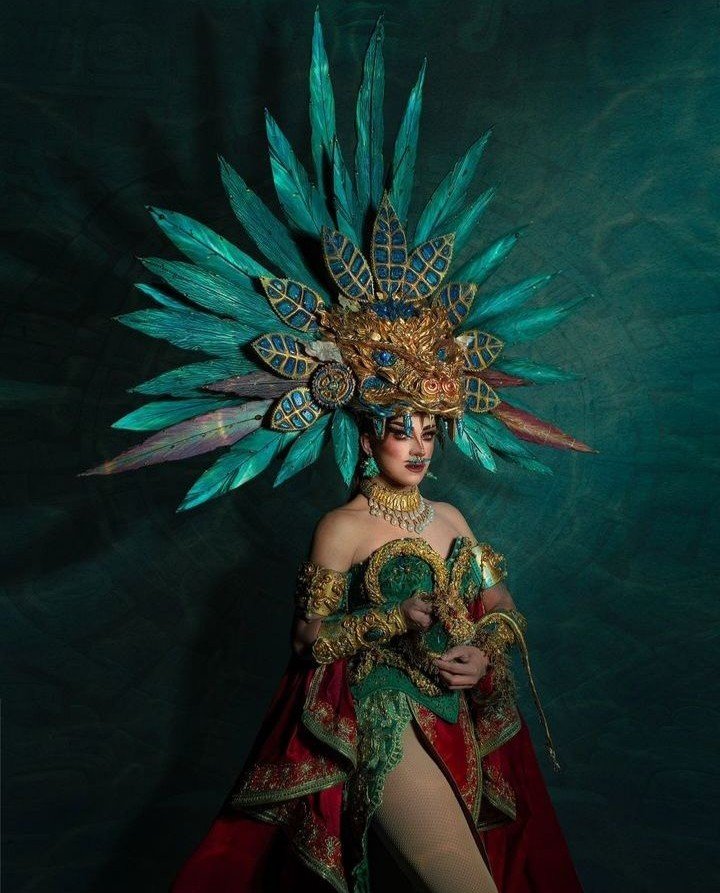
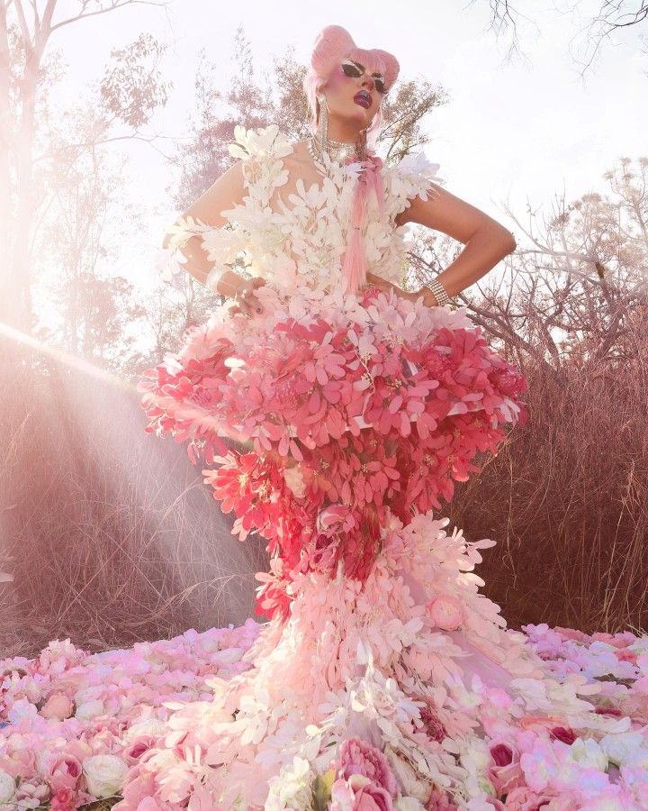

Las Mentes Detrás del Colectivo
Cpher & Aviesc es un laboratorio visual definitivo donde la innovación digital friki, la alta costura y la mitología neón convergen de manera radical. Inspirado en el impacto cultural y la excelencia artística de dos de las reinas coronadas más icónicas del drag en México, este proyecto individual simula una alianza creativa sin precedentes. Aquí, la precisión geométrica de la caracterización y el drama del maximalismo textil se unifican para desafiar los límites tradicionales del diseño de personajes y la fotografía editorial contemporánea.
Cpher: Innovación Friki y la Geometría Digital
Reconocida a nivel nacional tras su participación en la cuarta temporada de La Más Draga y consolidada como la gran reina coronada de Solo Las Más, Cpher aporta al colectivo un enfoque fuertemente influenciado por la cultura friki, el anime y los videojuegos. Su especialidad radica en la creación de siluetas robóticas, el modelado y la caracterización digital de alta complejidad. En este espacio se recopilan sus metodologías de maquetación de personajes y diseño de prótesis visuales aplicadas al entorno editorial.

Aviesc Who?: El Maximalismo Textil y el Caos Cromático
Consagrada como la reina coronada de la tercera temporada de La Más Draga, la propuesta visual de Aviesc Who? rompe de manera radical con cualquier atisbo de minimalismo. Su trabajo está fuertemente arraigado en el diseño de modas de alta costura, la saturación volumétrica de texturas y el uso disruptivo de paletas estridentes inspiradas en la mitología neón. Aportando drama, vanguardia y una narrativa kitsch/fantasiosa profundamente densa, su enfoque redefine los límites de la maquetación textil tradicional y el performance artístico.

Proceso Creativo en Movimiento
Para comprender verdaderamente la dimensión performática del colectivo, es necesario observar la transición de la moda editorial al escenario interactivo. A continuación, se presenta la propuesta audiovisual desarrollada por Aviesc Who? inspirada en la iconografía de Lady Gaga para la plataforma Toma Mi Dinerita, una muestra clara de sincronía musical, estilismo disruptivo y alta fantasía.